Timeless exterior
Hardie board-and-batten siding, craftsman detailing and gas lanterns create a graceful Lowcountry farmhouse presence.
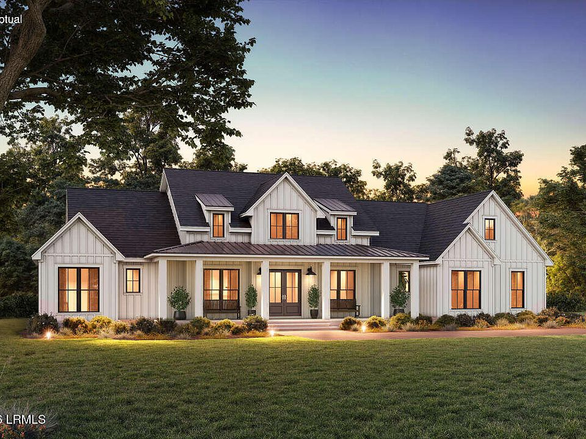
Bull Point Plantation · Seabrook, South Carolina
New construction · Offered at $1,150,000
Timeless Lowcountry architecture, generous porches and thoughtful modern livability—now taking shape within the gates of Bull Point.
Conceptual rendering, not completed construction. Approved plans and specifications control.
A modern farmhouse in the Lowcountry
A home with the presence of a Southern original and the ease of new construction.
Four bedrooms and 4.5 baths are arranged across a primarily one-level plan, with a flexible conditioned suite above the garage. Deep porches, a generous kitchen and carefully planned support spaces make the home equally comfortable for quiet mornings and a full house.
The residence
Every part of the plan is designed to make daily life feel generous, organized and connected to the outdoors.
Hardie board-and-batten siding, craftsman detailing and gas lanterns create a graceful Lowcountry farmhouse presence.
A gourmet kitchen and adjoining butler's pantry—with its own sink—support everyday life and effortless entertaining.
Deep front and rear porches, including a screened rear porch pre-plumbed for an outdoor kitchen, extend life outdoors.
The bonus room over the garage can serve as a guest suite, home office or media retreat.
A two-car garage plus dedicated golf-cart bay supports life inside a private waterfront community.
Spray-foam insulation, zoned comfort systems and a tankless gas water heater support year-round living.
Construction update
The framing inspection has passed, moving the residence into its next building-systems phase. Select finish personalization may remain available depending on timing, material availability and written builder approval.
Framing passed · Project-team update September 3, 2026Life at Bull Point
Bull Point offers gated community living with boat access, clubhouse and fitness amenities, a community pool, tennis and pickleball, walking trails and boat storage. Community photographs show shared amenities, not private features of this property.
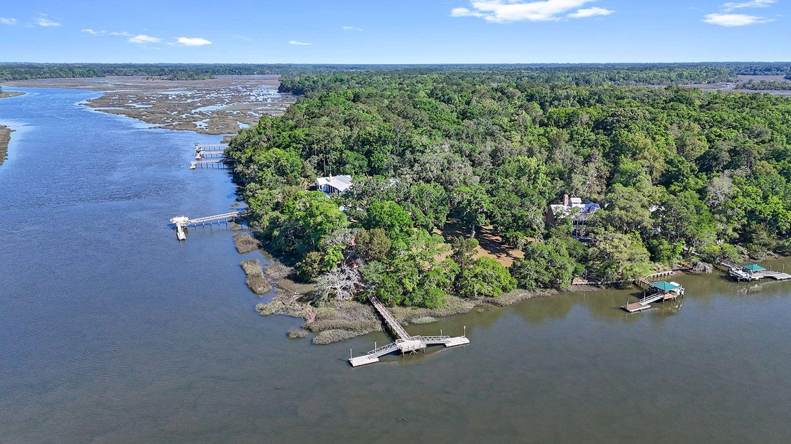
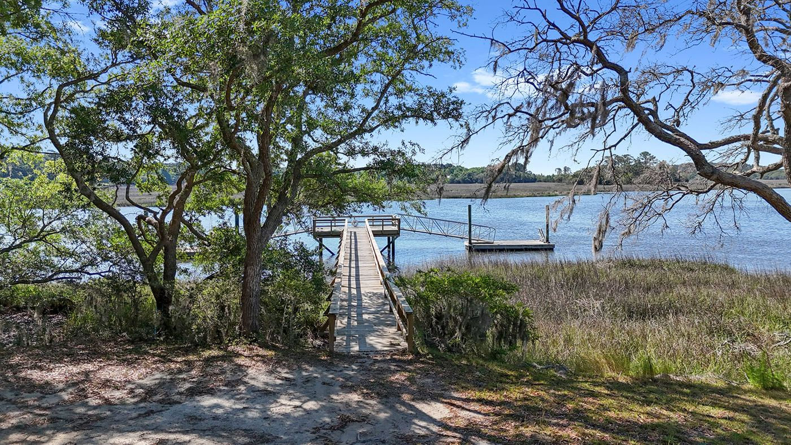
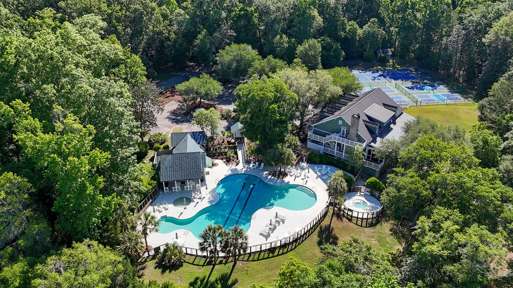
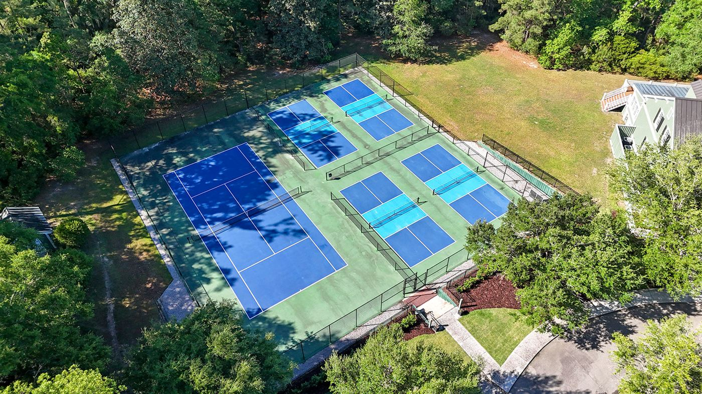
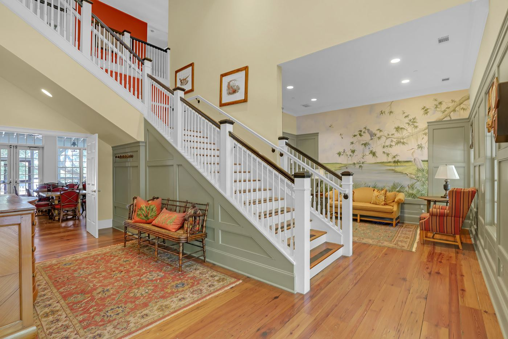
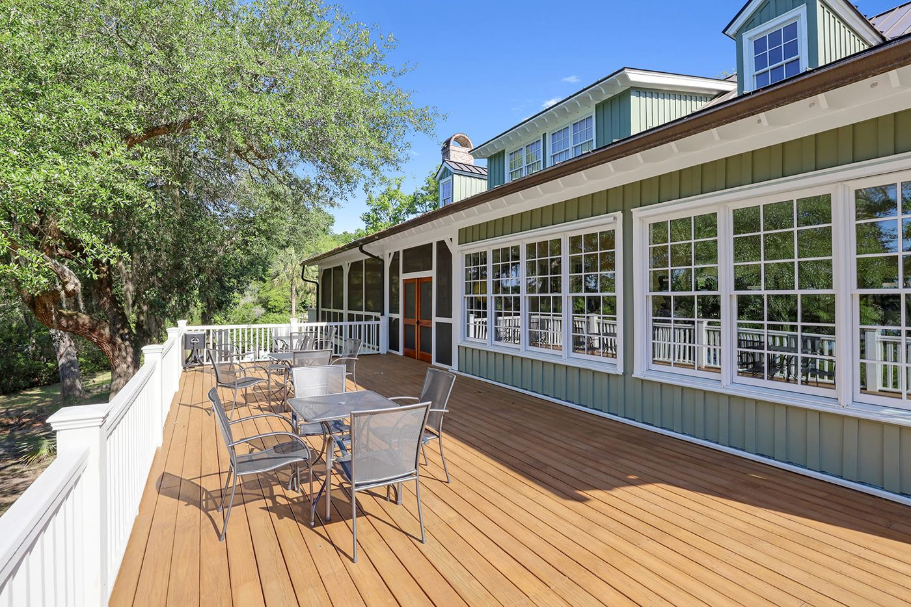
Bull Point community photography by Ryan Strauss.
Your place at Bull Point
Arrange a private site visit, virtual consultation or complete property presentation with the Old South Properties team.
Explore the design
Explore the project team's interior renderings, from the kitchen and gathering spaces to private bedroom and bath retreats. Renderings illustrate design intent, not completed construction or guaranteed inclusions. Approved plans, specifications and purchase documents control.
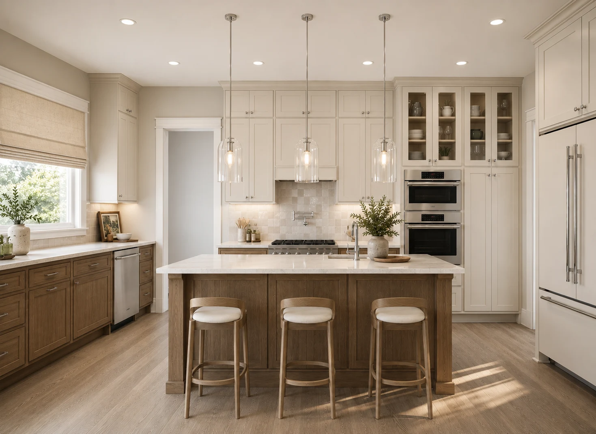
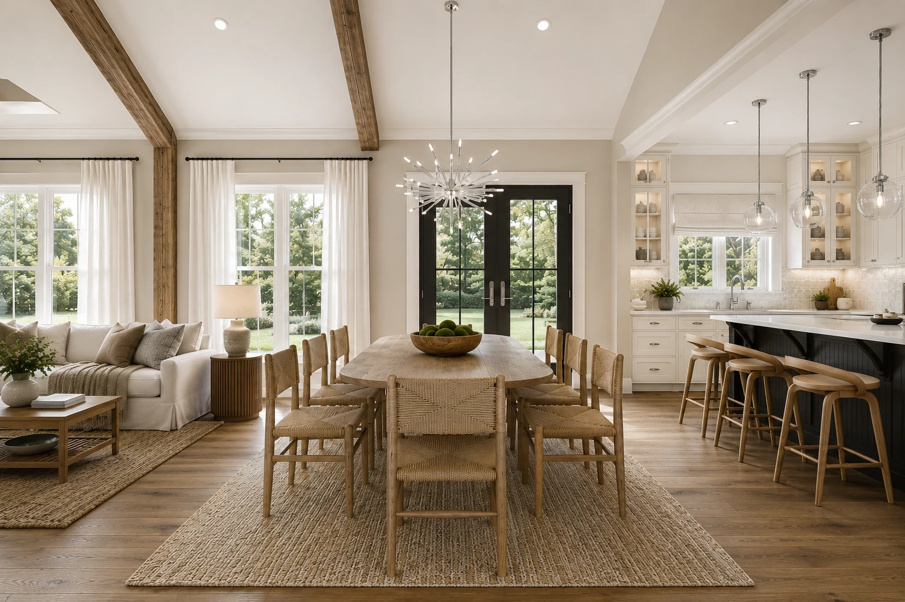
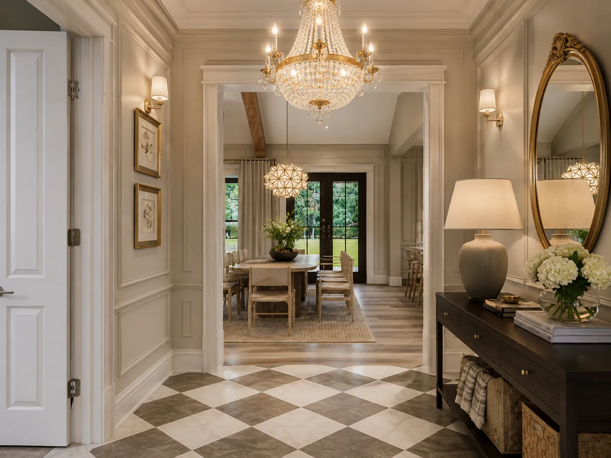
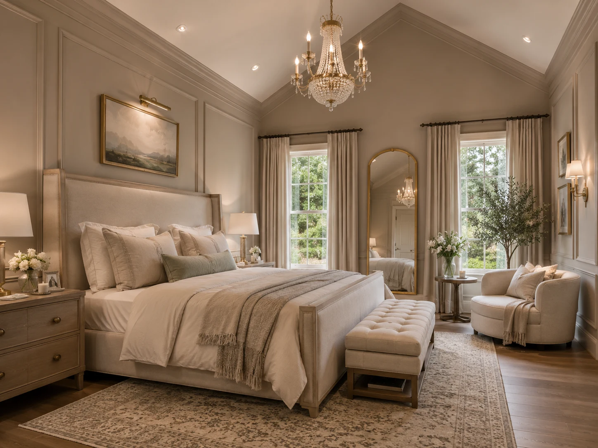
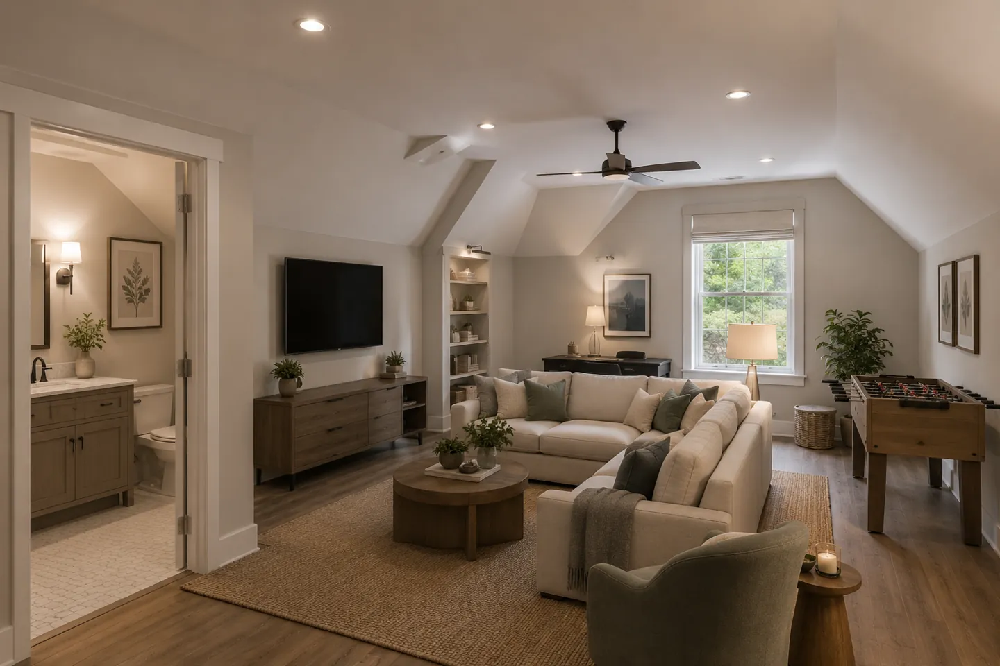
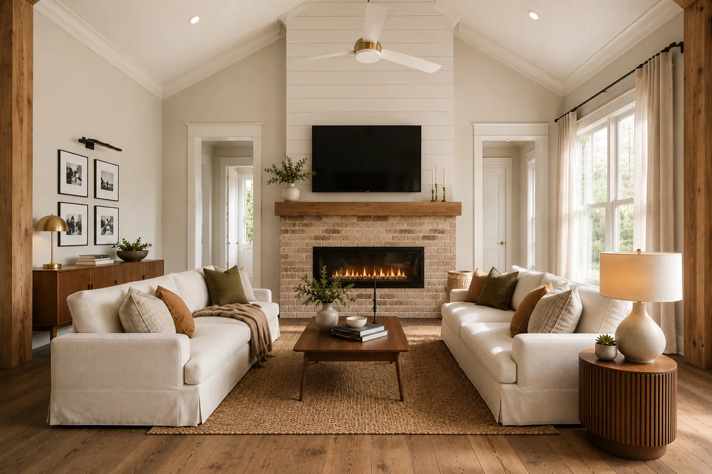
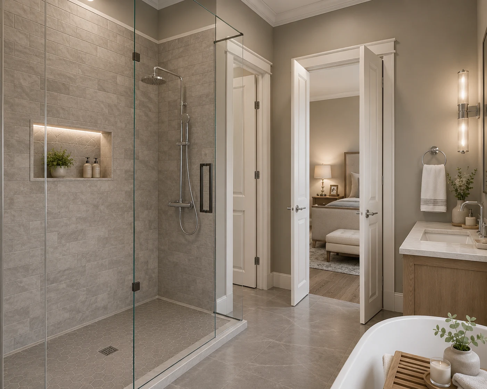
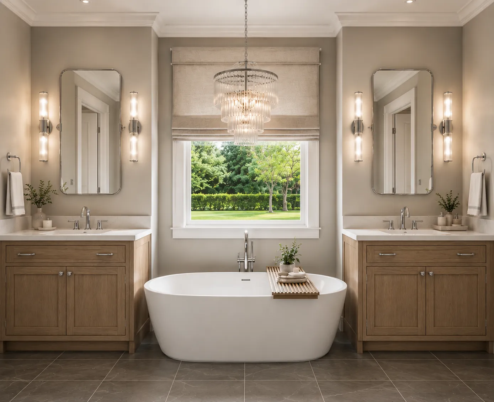
The floor-plan image below is a cropped listing excerpt, not a complete construction plan. Ask the team for the current approved plans.
Follow Bull Point
Follow @bullpointsc on Instagram for daily updates, construction progress and life around the community.